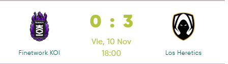
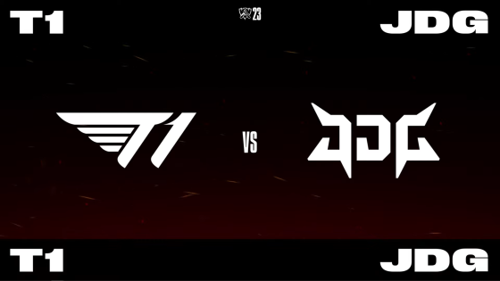

La emoción descontrolada de TheGrefg tras la victoria de Heretics en la Iberian Cup

Los Heretics disfrutaron del último baile de KOI en la Iberian Cup, el creador de contenido y uno de los propietarios del equipo no pudo controlar su enorme emoción por la victoria.
No sabemos si KOI se llamará igual en 2024, si se fusionarán con el supuesto proyecto de LEC de Elyoya y MAD Lions o qué, pero lo que está claro es que las finales son complicadas y KOI afrontóun duro golpe nada más empezar.
T1 gana contra JDG: T1, A LA GRAN FINAL CONTRA WEIBO

Increíble partido de los coreanos. Terminan con el máximo favorito chino, tras acabar en cuartos con LNG. FAKER en su segunda final consecutiva. El año pasado cayó contra Deft, ahora, en el mundial que se juega en su país natal, el 'Rey demonio podría hacerse con un título de nuevo, siete años después. Sería su cuarto mundial, y llega cuando muchos no confiaban en su equipo. Será la sexta final de T1 y la sexta final del mejor jugador de la historia, que no se cansa de agrandar su leyenda.